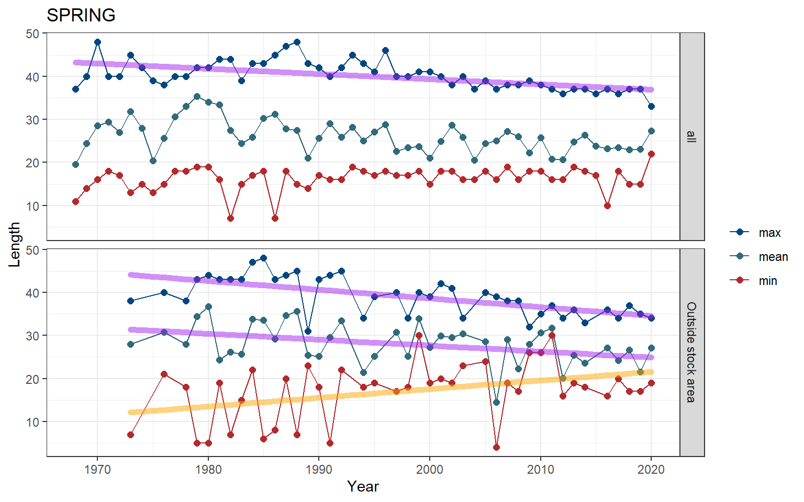

3.1 Length
Length data were pulled from survdat. Only years with more than 10 fish lengths were considered for analysis.
3.1.1 Figures
Separate geom_gls() functions were fit for the minimum, mean, and maximum lengths; trend lines are only shown when the trend was statistically significant, so some plots may have fewer than three trend lines. Please note, sometimes the survey observed a small number of fish outside of the defined stock area.
Figure 3.1: Atlantic mackerel

Figure 3.2: Atlantic mackerel

Figure 3.3: Atlantic mackerel

Figure 3.4: Atlantic mackerel
Risk
See Methods for risk calculation details.
Rank of change compared to historical, ranked among stocks

Figure 3.5: Atlantic mackerel
Rank of value (magnitude) compared to other stocks

Figure 3.6: Atlantic mackerel
Rank of value (magnitude) within a single stock, compared to all years

Figure 3.7: Atlantic mackerel
3.1.2 Summary
| Season | Region | Mean value +- SD (n fish, n years) | Mean value +- SD (n fish, past 5 years) | Range (total) | Range (past 5 years) |
|---|---|---|---|---|---|
| FALL | all | 22.53 +- 5.31 (44,202, 55) | 26.9 +- 3.06 (10,855, 5) | 4 - 47 | 13 - 35 |
| FALL | Outside stock area | 24.1 +- 4.78 (68,681, 45) | 27.77 +- 2.57 (31,530, 5) | 11 - 51 | 15 - 38 |
| SPRING | all | 24.44 +- 5.24 (307,371, 53) | 23.28 +- 3.49 (37,717, 5) | 7 - 48 | 10 - 37 |
| SPRING | Outside stock area | 25.63 +- 5.56 (28,105, 41) | 26.06 +- 3.91 (1,707, 5) | 4 - 48 | 16 - 37 |
| SUMMER | all | 32.21 +- 4.95 (77, 1) | 32.21 +- 4.95 (77, 1) | 26 - 42 | 26 - 42 |
| WINTER | all | 24.98 +- 5.65 (65,694, 15) | 23.44 +- 4.95 (42,371, 5) | 16 - 45 | 16 - 39 |
| WINTER | Outside stock area | 33.4 +- 4.65 (370, 1) | 33.4 +- 4.65 (370, 1) | 21 - 44 | 21 - 44 |
3.1.3 Data
(#fig:length_data)Atlantic mackerel